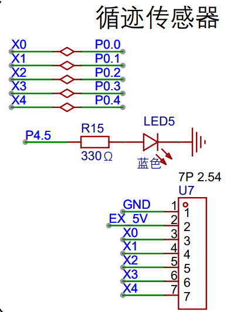
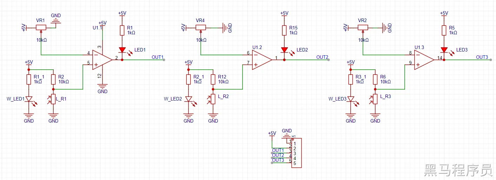
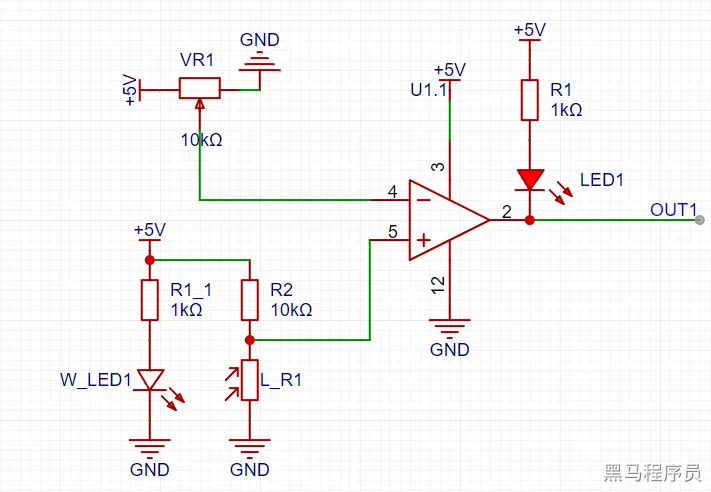
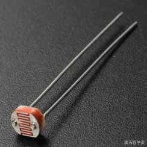
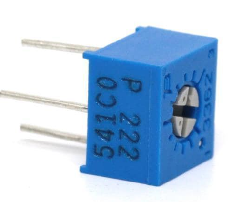
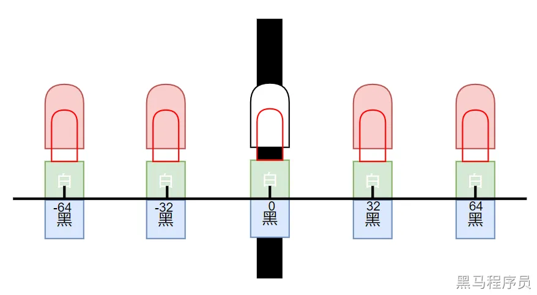
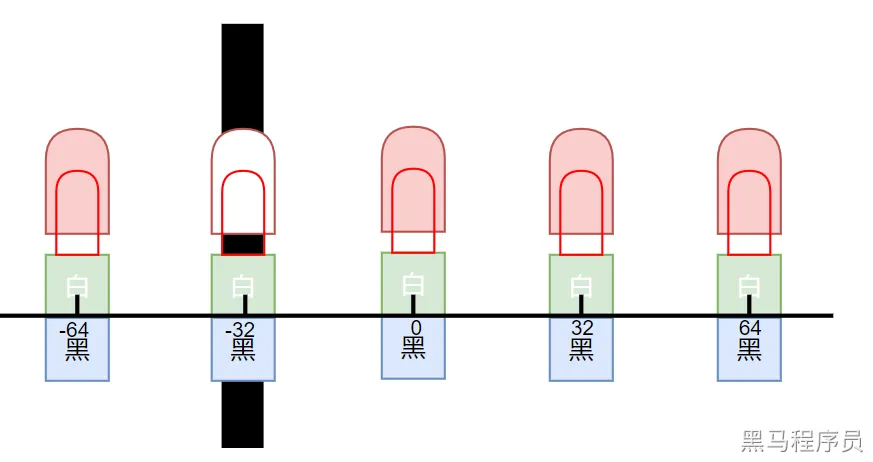
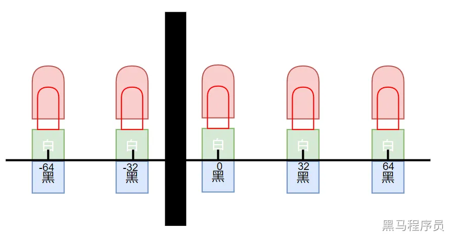
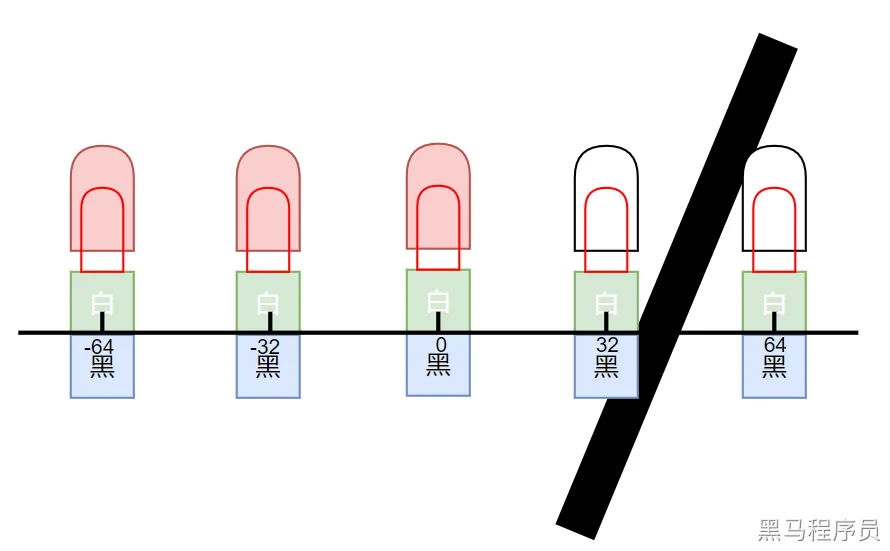

<!DOCTYPE lake>
<p data-lake-id="u70f34d54" id="u70f34d54"><strong><span class="lake-fontsize-14" data-lake-id="u5bcf1a68" id="u5bcf1a68">灰度传感器</span></strong></p><h3 data-lake-id="kmFDF" id="kmFDF"><strong><span class="lake-fontsize-14" data-lake-id="u744c2f86" id="u744c2f86">原理图</span></strong></h3><p data-lake-id="u24da55e2" id="u24da55e2"></p><h3 data-lake-id="ljpRz" id="ljpRz"><strong><span class="lake-fontsize-18" data-lake-id="ub5ceffc8" id="ub5ceffc8" style="color: var(--yq-text-primary)">模块原理图</span></strong><span class="lake-fontsize-18" data-lake-id="u632dfbf0" id="u632dfbf0" style="color: var(--yq-text-primary)"><br/></span><strong><span class="lake-fontsize-11" data-lake-id="u12bf9a48" id="u12bf9a48" style="color: var(--yq-text-primary)">三组模块</span></strong><span class="lake-fontsize-11" data-lake-id="u9cd0ef24" id="u9cd0ef24" style="color: var(--yq-text-primary)"><br/><br/></span></h3><p data-lake-id="uc51a1c71" id="uc51a1c71"></p><p data-lake-id="u3cb30253" id="u3cb30253"><span class="lake-fontsize-11" data-lake-id="u7e9a0c41" id="u7e9a0c41" style="color: var(--yq-text-primary)"><br/></span><strong><span class="lake-fontsize-11" data-lake-id="u6058b0e8" id="u6058b0e8" style="color: var(--yq-text-primary)">单组模块</span></strong><span class="lake-fontsize-11" data-lake-id="u72e650ac" id="u72e650ac" style="color: var(--yq-text-primary)"><br/><br/></span></p><p data-lake-id="uad128cd2" id="uad128cd2"></p><p data-lake-id="u372ca05d" id="u372ca05d"><span class="lake-fontsize-11" data-lake-id="u33894dca" id="u33894dca" style="color: var(--yq-text-primary)"><br/></span><strong><span class="lake-fontsize-18" data-lake-id="u3dd5934c" id="u3dd5934c" style="color: var(--yq-text-primary)">光敏电阻</span></strong><span class="lake-fontsize-18" data-lake-id="u0ab9c693" id="u0ab9c693" style="color: var(--yq-text-primary)"><br/><br/></span></p><p data-lake-id="u8a5725ec" id="u8a5725ec"></p><p data-lake-id="u5465b752" id="u5465b752"><span class="lake-fontsize-11" data-lake-id="uf0c6f1f0" id="uf0c6f1f0" style="color: var(--yq-text-primary)"><br/></span><span class="lake-fontsize-11" data-lake-id="u99013835" id="u99013835" style="color: var(--yq-text-primary)">光敏电阻(LDR, Light Dependent Resistor)是一种半导体光电器件，其电阻值随光照强度变化而变化。</span><strong><span class="lake-fontsize-11" data-lake-id="ufcb23cc0" id="ufcb23cc0" style="color: var(--yq-text-primary)">光照强度越强</span></strong><span class="lake-fontsize-11" data-lake-id="ud0a3a777" id="ud0a3a777" style="color: var(--yq-text-primary)">，光敏电阻的</span><strong><span class="lake-fontsize-11" data-lake-id="u183fb822" id="u183fb822" style="color: var(--yq-text-primary)">电阻值越小</span></strong><span class="lake-fontsize-11" data-lake-id="udfcfe013" id="udfcfe013" style="color: var(--yq-text-primary)">；光照强度越弱，光敏电阻的电阻值越大。光敏电阻具有以下特点：<br/></span><span class="lake-fontsize-11" data-lake-id="u37abaeab" id="u37abaeab" style="color: var(--yq-text-primary)">●</span><strong><span class="lake-fontsize-11" data-lake-id="udad370fa" id="udad370fa" style="color: var(--yq-text-primary)">灵敏度高</span></strong><span class="lake-fontsize-11" data-lake-id="u33c51f1e" id="u33c51f1e" style="color: var(--yq-text-primary)">：光敏电阻对光照强度的变化非常敏感，即使很微小的光照变化也能引起电阻值的明显变化。<br/></span><span class="lake-fontsize-11" data-lake-id="u2e55d9c2" id="u2e55d9c2" style="color: var(--yq-text-primary)">●</span><strong><span class="lake-fontsize-11" data-lake-id="uc67236d9" id="uc67236d9" style="color: var(--yq-text-primary)">响应速度快</span></strong><span class="lake-fontsize-11" data-lake-id="u24a18484" id="u24a18484" style="color: var(--yq-text-primary)">：光敏电阻的光电流变化与光照强度的变化几乎是同步的，因此响应速度非常快。<br/></span><span class="lake-fontsize-11" data-lake-id="u1d48a571" id="u1d48a571" style="color: var(--yq-text-primary)">●</span><strong><span class="lake-fontsize-11" data-lake-id="u462dc895" id="u462dc895" style="color: var(--yq-text-primary)">光谱特性好</span></strong><span class="lake-fontsize-11" data-lake-id="ubad5b3dd" id="ubad5b3dd" style="color: var(--yq-text-primary)">：光敏电阻对不同波长的光具有不同的灵敏度，可以通过选择合适的材料来制备具有特定光谱特性的光敏电阻。<br/></span><span class="lake-fontsize-11" data-lake-id="u97e7721d" id="u97e7721d" style="color: var(--yq-text-primary)">●</span><strong><span class="lake-fontsize-11" data-lake-id="u13c99239" id="u13c99239" style="color: var(--yq-text-primary)">温度特性好</span></strong><span class="lake-fontsize-11" data-lake-id="u07650097" id="u07650097" style="color: var(--yq-text-primary)">：光敏电阻的电阻值随温度变化而变化，但这种变化相对较小，可以通过温度补偿来消除。<br/></span><span class="lake-fontsize-11" data-lake-id="ud8b8220e" id="ud8b8220e" style="color: var(--yq-text-primary)">●</span><strong><span class="lake-fontsize-11" data-lake-id="u401db6bf" id="u401db6bf" style="color: var(--yq-text-primary)">结构简单、价格低廉</span></strong><span class="lake-fontsize-11" data-lake-id="ue904fe1c" id="ue904fe1c" style="color: var(--yq-text-primary)">：光敏电阻的结构比较简单，制造成本低廉。<br/></span><span class="lake-fontsize-11" data-lake-id="u6fb5d7b9" id="u6fb5d7b9" style="color: var(--yq-text-primary)">光敏电阻的主要应用包括：<br/></span><span class="lake-fontsize-11" data-lake-id="u95a97d0c" id="u95a97d0c" style="color: var(--yq-text-primary)">●</span><strong><span class="lake-fontsize-11" data-lake-id="ud66fed9e" id="ud66fed9e" style="color: var(--yq-text-primary)">光度测量</span></strong><span class="lake-fontsize-11" data-lake-id="u1f4119ad" id="u1f4119ad" style="color: var(--yq-text-primary)">：光敏电阻可以用作光度计的光敏元件，测量环境的光照强度。<br/></span><span class="lake-fontsize-11" data-lake-id="u251585b3" id="u251585b3" style="color: var(--yq-text-primary)">●</span><strong><span class="lake-fontsize-11" data-lake-id="ua38e7e2e" id="ua38e7e2e" style="color: var(--yq-text-primary)">自动控制</span></strong><span class="lake-fontsize-11" data-lake-id="u2ea8bd31" id="u2ea8bd31" style="color: var(--yq-text-primary)">：光敏电阻可以用作自动控制电路的光敏元件，例如自动门、自动照明、自动曝光等。<br/></span><span class="lake-fontsize-11" data-lake-id="ufaa9012e" id="ufaa9012e" style="color: var(--yq-text-primary)">●</span><strong><span class="lake-fontsize-11" data-lake-id="u2576104b" id="u2576104b" style="color: var(--yq-text-primary)">光电检测</span></strong><span class="lake-fontsize-11" data-lake-id="u9e9c1dfe" id="u9e9c1dfe" style="color: var(--yq-text-primary)">：光敏电阻可以用作光电检测器件，例如烟雾报警器、气体探测器等。<br/></span><span class="lake-fontsize-11" data-lake-id="u89f827ba" id="u89f827ba" style="color: var(--yq-text-primary)">●</span><strong><span class="lake-fontsize-11" data-lake-id="udc8f235f" id="udc8f235f" style="color: var(--yq-text-primary)">光电通讯</span></strong><span class="lake-fontsize-11" data-lake-id="u0d13e92e" id="u0d13e92e" style="color: var(--yq-text-primary)">：光敏电阻可以用作光电通讯器件，例如光电耦合器等。<br/></span><strong><span class="lake-fontsize-18" data-lake-id="ufd9f384b" id="ufd9f384b" style="color: var(--yq-text-primary)">黑线检测原理</span></strong><span class="lake-fontsize-18" data-lake-id="u622c6daf" id="u622c6daf" style="color: var(--yq-text-primary)"><br/></span><strong><span class="lake-fontsize-14" data-lake-id="u87f04b53" id="u87f04b53" style="color: var(--yq-text-primary)">光敏电阻对着地面</span></strong><span class="lake-fontsize-14" data-lake-id="u63161ec5" id="u63161ec5" style="color: var(--yq-text-primary)"><br/></span><span class="lake-fontsize-11" data-lake-id="u4f89fc01" id="u4f89fc01" style="color: var(--yq-text-primary)">1W_LED1亮起，光敏电阻L_R1收到光线<br/></span><span class="lake-fontsize-11" data-lake-id="u038d25d3" id="u038d25d3" style="color: var(--yq-text-primary)">2光敏电阻阻值较小，例如：1kΩ。此时模拟比较器5号引脚分到电压大约为0.5V<br/></span><span class="lake-fontsize-11" data-lake-id="u06883bb1" id="u06883bb1" style="color: var(--yq-text-primary)">3假如滑动变阻器的阻值处于中间位置，则模拟比较器4号引脚分到电压2.5V<br/></span><span class="lake-fontsize-11" data-lake-id="u5bbcbd8c" id="u5bbcbd8c" style="color: var(--yq-text-primary)">45引脚电压低于4引脚，模拟比较器2号引脚输出低电平<br/></span><span class="lake-fontsize-11" data-lake-id="u97c04300" id="u97c04300" style="color: var(--yq-text-primary)">5LED1</span><strong><span class="lake-fontsize-11" data-lake-id="u579688b6" id="u579688b6" style="color: var(--yq-text-primary)">点亮</span></strong><span class="lake-fontsize-11" data-lake-id="ue65539bb" id="ue65539bb" style="color: var(--yq-text-primary)">，OUT1引脚输出</span><strong><span class="lake-fontsize-11" data-lake-id="u43a9ba06" id="u43a9ba06" style="color: var(--yq-text-primary)">低电平</span></strong><span class="lake-fontsize-11" data-lake-id="ud01babe2" id="ud01babe2" style="color: var(--yq-text-primary)"><br/></span><strong><span class="lake-fontsize-14" data-lake-id="u56205006" id="u56205006" style="color: var(--yq-text-primary)">光敏电阻对着黑线</span></strong><span class="lake-fontsize-14" data-lake-id="u1eaaf4bb" id="u1eaaf4bb" style="color: var(--yq-text-primary)"><br/></span><span class="lake-fontsize-11" data-lake-id="u672fe524" id="u672fe524" style="color: var(--yq-text-primary)">1W_LED1亮起，由于光线被黑线吸收大部分，光敏电阻L_R1无法收到光线<br/></span><span class="lake-fontsize-11" data-lake-id="ua413a6ce" id="ua413a6ce" style="color: var(--yq-text-primary)">2光敏电阻阻值较大，例如：40kΩ。此时模拟比较器5号引脚分到电压为4.0V<br/></span><span class="lake-fontsize-11" data-lake-id="ua66adcd9" id="ua66adcd9" style="color: var(--yq-text-primary)">3假如滑动变阻器的阻值处于中间位置，则模拟比较器4号引脚分到电压2.5V<br/></span><span class="lake-fontsize-11" data-lake-id="u1e0af9c8" id="u1e0af9c8" style="color: var(--yq-text-primary)">45引脚电压高于4引脚，模拟比较器2号引脚输出高电平<br/></span><span class="lake-fontsize-11" data-lake-id="uab364bc4" id="uab364bc4" style="color: var(--yq-text-primary)">5LED1</span><strong><span class="lake-fontsize-11" data-lake-id="ub8a6bf1e" id="ub8a6bf1e" style="color: var(--yq-text-primary)">熄灭</span></strong><span class="lake-fontsize-11" data-lake-id="u5b98667e" id="u5b98667e" style="color: var(--yq-text-primary)">，OUT1引脚输出</span><strong><span class="lake-fontsize-11" data-lake-id="u5339ffd2" id="u5339ffd2" style="color: var(--yq-text-primary)">高电平</span></strong><span class="lake-fontsize-11" data-lake-id="uce1760f4" id="uce1760f4" style="color: var(--yq-text-primary)"><br/><br/></span><span class="lake-fontsize-11" data-lake-id="u5f45b414" id="u5f45b414" style="color: var(--yq-text-primary)">我们根据哪个位置是高电平（LED熄灭），就可以直观地了解黑线位于什么位置。<br/><br/></span><strong><span class="lake-fontsize-11" data-lake-id="u5fa9bfcc" id="u5fa9bfcc" style="color: var(--yq-text-primary)">调配滑动变阻器：</span></strong></p><p data-lake-id="ue494577c" id="ue494577c"><span class="lake-fontsize-11" data-lake-id="u217a3c53" id="u217a3c53" style="color: var(--yq-text-primary)"><br/>1靠近地面全部亮起（光敏传感器收到地面反弹的光线）<br/>2抬高一定距离（5cm以上）统一灭掉（等同于遇到黑线）<br/><br/></span><strong><span class="lake-fontsize-11" data-lake-id="ua1e0fdce" id="ua1e0fdce" style="color: var(--yq-text-primary)">注意:</span></strong><span class="lake-fontsize-11" data-lake-id="ub93e5ddc" id="ub93e5ddc" style="color: var(--yq-text-primary)"><br/>假如</span><strong><span class="lake-fontsize-11" data-lake-id="u67070ad3" id="u67070ad3" style="color: var(--yq-text-primary)">光敏电阻对着空气，</span></strong><span class="lake-fontsize-11" data-lake-id="u1a6f1c1a" id="u1a6f1c1a" style="color: var(--yq-text-primary)">光敏电阻也无法收到W_LED发出的光线，此时全部输出LED灯处于熄灭状态，且所有IO输出高电平。<br/></span><strong><span class="lake-fontsize-18" data-lake-id="uf1714712" id="uf1714712" style="color: var(--yq-text-primary)">循线原理</span></strong><span class="lake-fontsize-18" data-lake-id="ue9c05182" id="ue9c05182" style="color: var(--yq-text-primary)"><br/></span><span class="lake-fontsize-11" data-lake-id="u0d297438" id="u0d297438" style="color: var(--yq-text-primary)">1.当前压线时，状态显示 (压倒黑线, 灯灭)<br/><br/></span></p><p data-lake-id="u6427b4f6" id="u6427b4f6"></p><p data-lake-id="uf1c10b8c" id="uf1c10b8c"></p><p data-lake-id="u4abcd515" id="u4abcd515"><span class="lake-fontsize-11" data-lake-id="ud44344ca" id="ud44344ca" style="color: var(--yq-text-primary)"><br/><br/><br/></span><span class="lake-fontsize-11" data-lake-id="u6de52962" id="u6de52962" style="color: var(--yq-text-primary)">2.当未压线时，状态丢失。以上一次状态为准<br/><br/></span></p><p data-lake-id="uacdb384b" id="uacdb384b"></p><p data-lake-id="u03dad794" id="u03dad794"><span class="lake-fontsize-11" data-lake-id="u1e6a3904" id="u1e6a3904" style="color: var(--yq-text-primary)"><br/></span><span class="lake-fontsize-11" data-lake-id="uf401de0a" id="uf401de0a" style="color: var(--yq-text-primary)">3.多个状态灭时，位置计算如下</span></p><p data-lake-id="uee491861" id="uee491861"></p><h3 data-lake-id="nXvDi" id="nXvDi"><span class="lake-fontsize-11" data-lake-id="u00a54cf5" id="u00a54cf5">灰度传感器代码实现</span></h3><span class="yuque-card-unsupported">[codeblock]</span><span class="yuque-card-unsupported">[codeblock]</span>